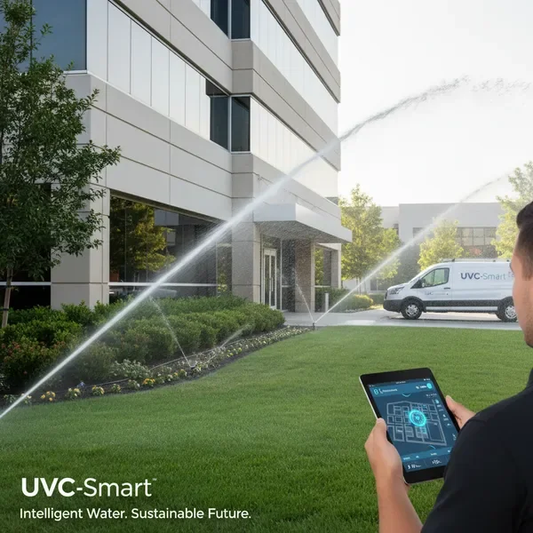
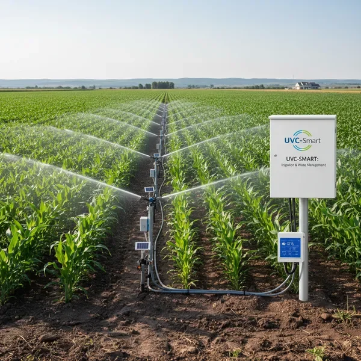

Residential Smart Irrigation
Transform your home watering routine with our intuitive smart irrigation controller app designed specifically for homeowners. Say goodbye to manual sprinkler timers and hello to effortless lawn care.
Perfect For:
- Front and back yard irrigation
- Garden beds and flower boxes
- Vegetable gardens and raised beds
- Drip irrigation systems
- Small to medium-sized properties
Key Benefits:
- Easy Setup:Install in under 30 minutes with no professional help needed
- Smart Scheduling:Automated watering schedule system adapts to weather and seasons
- Water Savings:Reduce water bills by 30-50% with optimized watering
- Remote Access:Control from anywhere via smartphone or computer
- Zone Management:Program up to 8 separate irrigation zones


Commercial Property Management
Maintain pristine landscapes across multiple properties with our scalable remote irrigation system control platform. Designed for property managers, HOAs, and facility maintenance teams.
Perfect For:
- Office parks and corporate campuses
- Shopping centers and retail spaces
- Multi-family residential complexes
- HOA common areas
- Municipal parks and facilities
Key Benefits:
- Multi-Site Management:Control unlimited properties from one dashboard
- User Permissions:Grant access to maintenance teams with custom roles
- Reporting & Analytics:Track water usage and system performance
- Maintenance Alerts:Receive notifications for system issues
- Budget Control:Set water usage limits and track costs
Agricultural & Farm Irrigation
Maximize crop yields while minimizing water waste with our precision automated watering schedule system. Built for farmers, nurseries, and agricultural operations of all sizes.
Perfect For:
- Row crops and field irrigation
- Greenhouse operations
- Nurseries and plant production
- Orchards and vineyards
- Hydroponic systems
Key Benefits:
- Precision Control:Manage individual zones with custom watering parameters
- Weather Integration:Automatic adjustments based on rainfall and forecasts
- Soil Monitoring:Optional sensor integration for moisture-based irrigation
- Scalability:Expand from small plots to hundreds of acres
- Crop-Specific Programs:Tailored schedules for different plant varieties
